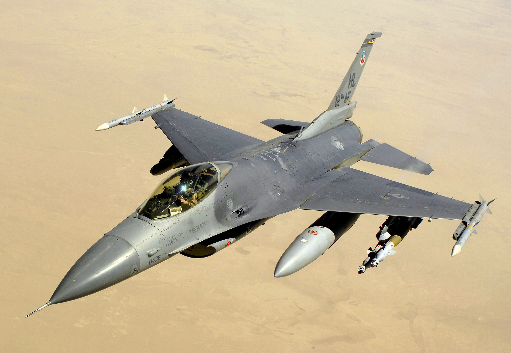

The F-16 Fighting Falcon is one of the most iconic and widely used multirole fighter jets in the world. Originally developed by General Dynamics and later produced by Lockheed Martin, it was designed to be lightweight, highly maneuverable, and capable of performing a wide range of missions.
One of the defining features of the F-16 is its exceptional agility. It was the first operational fighter aircraft to use a fly-by-wire control system, replacing traditional mechanical controls with electronic signals. This allows the aircraft to respond quickly to pilot inputs, providing superior handling in combat situations.
The aircraft is equipped with a powerful engine that enables it to reach supersonic speeds, along with advanced radar systems that allow it to detect and engage targets at long distances. Its weapons loadout includes air-to-air missiles, precision-guided bombs, and a 20mm internal cannon, making it effective in both air combat and ground attack roles.
Another key advantage of the F-16 is its versatility. It has been adapted into multiple variants and upgraded over time with modern avionics, improved radar systems, and enhanced weapons capabilities. This adaptability has allowed it to remain relevant in modern air forces even decades after its introduction.
Today, the F-16 continues to serve in many countries around the world, proving its reliability, efficiency, and long-lasting performance in a wide range of operational environments.